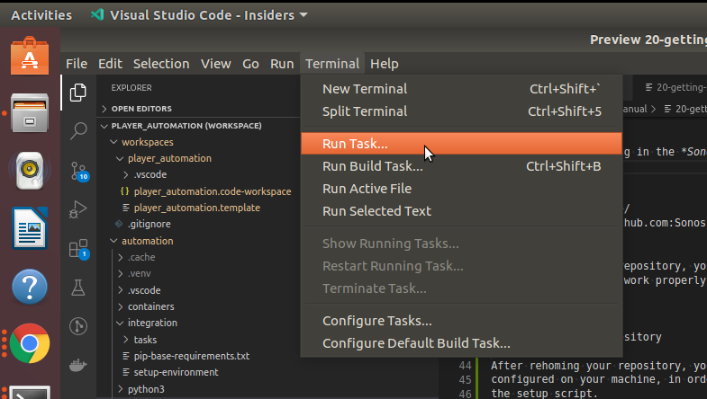
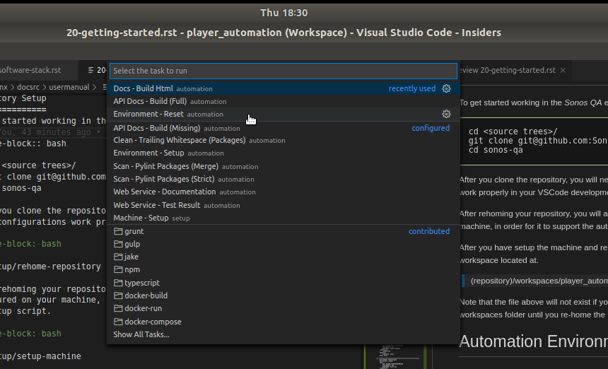

Getting Started
Preliminary Setup
Before attempting to use the repository you will need to setup your development environment and machine.
Install VSCode
Install the Recommended VSCode Plug-Ins
Bash Beautify
Bash Debug
C/C++
code-groovy
Docker
Native Debug
Python
Python Preview
Pylance
Preview
reStructuredText
vscode-icons
XML Tools
Repository Setup
To get started working in the ExOrg QA environment, you will first need to clone the git repository.
cd (source-tree-folder)/
git clone git@github.com:exorg/exorg-qa.git exorg-qa
cd exorg-qa
After you clone the repository, you will need to rehome the repository so the workspace task and debug configurations work properly in your VSCode development environment.
setup/rehome-repository
After rehoming your repository, you will also need to make sure all the dependencies are installed and configured on your machine, in order for it to support the automation environment. This is done by running the setup script.
setup/setup-machine
After you have setup the machine and rehomed the repository, you can open an automation workspace by opening the workspace located at.
(repository)/workspaces/player_automation/player_automation.code-workspace
Note that the file above will not exist if you have not rehomed the repository. You will only see “.template” files in the workspaces folder until you re-home the repository.
Automation Environment Setup
Once you have setup the repository and your development machine. You can open the player_automation.code-workspace in VSCode. You will be asked if you trust the code in the repository, you will need to select Yes. You might also be asked to accept workspace settings, you should accept those also.
At this point you are very close to being able to run automation code, but you still have one last thing to do. You must setup the python virtual environment used by the automation code. This can be done in two ways. You can run the VSCode task by selecting Run->**Task** as shown below.
{kind=link}
When you click the Task menu item, then tasks menu will be shown. You will select the task named Environment - Setup or Environment - Rest.
{kind=link}
The reset task is used if you need to reset an environment that was previously setup. It bypasses checks which see if the virtual environment already exists.
The second way to setup the virtual environment is from the commandline. From the repository folder you can run the following command.
automation/integration/setup-environment
After you have setup the environment, you are setup to run code. You can find out how to configure the automation environment by looking at the Automation Configuration page.